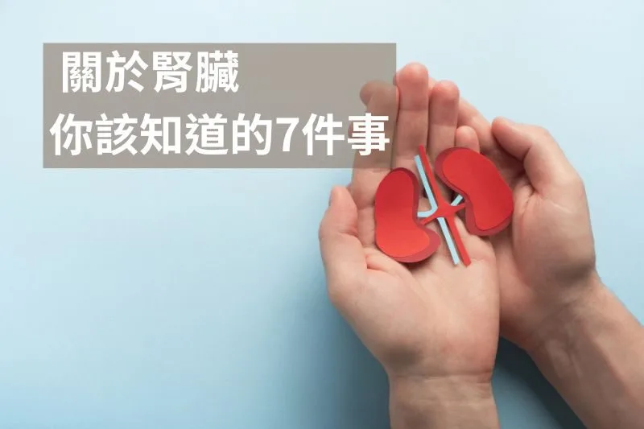

關於腎臟，你該知道的7件事

腎臟是人體的「天然濾水器」，負責排除廢物、調節體內水分與電解質平衡，同時維持血壓穩定。然而，隨著飲食習慣的改變，腎病的發生率逐年上升，全球約 10% 的人口受到慢性腎病（CKD）影響，許多人甚至在腎功能受損前毫無察覺。想要讓腎臟維持良好狀態，從日常飲食和生活習慣下手，絕對是最實際的方法，今天給大家一些腎臟的健康知識和打破一些傳統迷思。
1.鈉：不是越少越好
長期以來，鈉一直被視為高血壓的元兇，但事實並非如此。的確，過量攝取鈉（每天超過 6g 鹽），特別是對於「鹽敏感型」的人來說，可能會導致血壓升高。然而，過度限鹽（每天少於 3g 鹽）反而可能增加死亡風險，特別是糖尿病、心血管疾病或腎病患者。人體本身具有調節鈉的機制，只要腎臟健康，多餘的鈉會透過尿液排出。因此，與其一味地減少鈉，不如增加鉀的攝取，來維持鈉鉀平衡，這對於穩定血壓比單純少吃鹽更有效。
2.鉀：健康人不用怕吃太多
另一個常見的迷思是「鉀會傷腎」，導致很多人刻意避免高鉀食物。但事實上，鉀的攝取對一般健康人不但無害，反而有助於腎臟運作。鉀的作用是幫助鈉的排除，減少高血壓風險，同時維持肌肉與神經的正常功能。只有腎臟功能嚴重受損、無法正常排鉀的患者才需要控制鉀的攝取。一般人可以放心食用蔬菜、堅果、酪梨、南瓜籽等富含鉀的天然食物。
3.蛋白質攝取：適量最重要
蛋白質是人體不可或缺的營養，參與肌肉修復、荷爾蒙調節與免疫功能，但過量攝取可能會增加腎臟的負擔。
對於一般人來說，高蛋白飲食對腎臟影響不大，甚至可能幫助降低血壓、穩定血糖。然而，對於已經有腎病的人，適量控制蛋白質攝取（每公斤體重 0.6–0.8g/天），則可以幫助減少腎臟的負擔，延緩腎功能惡化。
4.抗氧化食物，幫助腎臟減少發炎與氧化壓力
腎臟每天都在幫助身體排毒，因此特別容易受到氧化壓力的影響。攝取富含抗氧化劑的食物，可以幫助中和自由基，減少腎臟細胞的損傷。我會推薦以下食物：
- 莓果類（藍莓、蔓越莓）：富含多酚，有助於保護腎臟細胞
- 堅果：含有 Omega-3 脂肪酸與維生素 E，減少發炎
- 深色葉菜：富含維生素 C 和鎂，但草酸含量較高，腎結石患者應適量攝取
- 黑巧克力：適量攝取有助於腎臟微血管的氧氣供應
- 橄欖油（Extra Virgin Olive Oil）：含有豐富的單元不飽和脂肪酸和多酚類抗氧化物質，有助於降低發炎反應，保護腎臟血管健康
- Omega-3 魚油（如鮭魚、沙丁魚、魚油補充品）：含有 EPA 與 DHA，能夠降低腎臟發炎、改善血流循環，對於糖尿病腎病與高血壓患者特別有益
5.水分補充：別等口渴才喝水
水是腎臟最重要的「工作夥伴」，幫助稀釋尿液、降低腎結石風險、促進代謝廢物排除。一般建議每日攝取 2.5公升的水，若有運動或大量流汗，則需額外補充可以透過尿液顏色判斷水分狀況：淡黃色表示水分足夠，深黃色則代表需要補充水分
6.檢測腎功能，肌酐（Creatinine）不是唯一指標
當我們做健康檢查時，最常見的腎功能指標是肌酐（Creatinine, Cr），但這個數值其實並不完全準確，因為它容易受到肌肉量與飲食狀況影響。運動員或肌肉量大的人，即使腎功能正常，肌酐數值也可能偏高 。老年人或營養不良者，即使腎臟受損，肌酐數值可能偏低。脫水或高蛋白飲食，也可能暫時提高肌酐數值
如果想要更準確評估腎功能，可以考慮胱蛋白 C（Cystatin C）這個指標，因為它不受肌肉量影響，能更精確反映腎臟的健康狀態。
7.維持腎臟健康的生活習慣
除了飲食，生活習慣也會大大影響腎臟健康。避免抽菸、控制酒精攝取、維持健康體重、適度運動，這些都是保護腎臟的重要關鍵。此外，穩定血糖與血壓也很重要，因為糖尿病與高血壓是導致腎病的主要因素之一。
 空腹小雞跟思思醫師一起斷食，順便養一隻小雞來養小雞 →
空腹小雞跟思思醫師一起斷食，順便養一隻小雞來養小雞 →
好朋友週信
每週五一封：《健康駭客週報》這集的研究重點，加上家醫專欄這週的新文章。免費，隨時可以退訂。